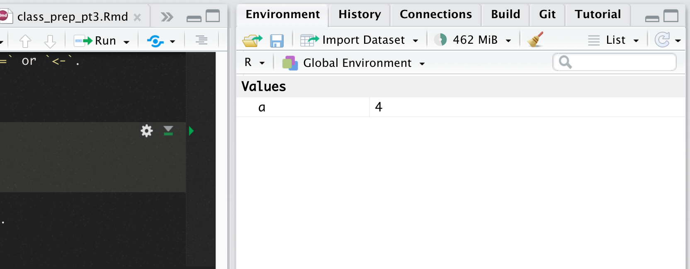

Class prep: Intro to R and RStudio
Lessons and exercises to catch you up what R is and how to use it.
welcome to class!
Welcome!
Before we officially get started, please be sure you have the latest versions of R and RStudio installed.
Also make sure you’ve installed this by running in the console:
install.packages("usethis")
usethis::use_course("https://github.com/r-journalism/chjr/archive/master.zip")Ready? Okay, let’s go!
Tour of R and RStudio
R is just a programming language and can be open in any coding program like Sublime or Visual Code Studio. But we’re going to focus on using R in the environment known as RStudio because it easily shows all the different parts, like plots and objects, well.
When you first open RStudio, the app is divided into three sections.
Most sections have tabs for even more additional ways to view different sorts of things.
These sections can be customized and placed wherever you want through the RStudio menu options (if you’d rather the Files tab be in the top right instead of the top left, for example). Preferences > Pane Layout

The tall section on the left is the console and that’s where you can type in R code to execute.
This code is also called commands or functions.

In the top right section, there’s the Environment tab where you can see the data or objects you are currently working on.
At first this section is empty because you have not loaded any data yet.
There’s also a tab in the top right section for History– this is where RStudio keeps track of the commands you run in the console.

A viewer is on the bottom right, where there are tabs to flip through the Files and folder structure of your computer (like in Finder or Explorer), the Plots (diagrams) when they’ve been generated, your list of available R Packages, Help information etc.
Reproducibility: Save your scripts
There’s a difference between quick, on-the-fly analysis and analysis you want to rerun later on.
The code you type out and run in console can be copied and pasted and saved in scripts and R Markdown files. Scripts end with .R file extension and R Markdown files, which mixes both R code and Markdown code, end with .Rmd.
R scripts versus R Markdown
You may hear mentions of “R Markdown” and that’s essentially the same thing as R scripts except with some enhanced formatting so that the code can be published as a pdf or a website or notebook. R scripts and R Markdown can only be opened by coding programs but the websites or PDFs generated by R Markdown can be open by non-programming people. It’s a means for communicating your results effectively to a wider audience. Compare the differences here and here.
In this course we’ll be alternating between typing code in the console and typing and saving code in a script. The code that’s disposable and written just for quick exploration can be and will be written in the console. Code we want to reuse and re purpose later on should be saved in a script.

These R source code files can be viewed in a Source section and pushes the console window down to accommodate.
To create a new script go through the menu File > New File > R Script or through the green plus button on the top left. This will expand the 3 windows in RStudio to 4. The script viewer will appear in the top left quadrant and push the console window into the lower left.

The file extensions for these files when saved ends with .R
Any code we type in here can be run in the console. Hitting the Run button at the top of the script window will run the line of code on which the cursor is sitting.
To run multiple lines of code, highlight them and click Run.

Be sure to save your scripts after you create them. And also save before running your code in case you write code that makes R crash– which will happen once in a while.
Scripts
R is an interpreter that uses a command line based environment.
This means that you have to type commands, rather than use the mouse and menus.
This has the advantage that you do not always have to retype commands.
You can store your commands in files, the so-called scripts. These scripts have typically file names with the extension .R as in script.R.
You can open an editor window to edit these files by clicking File > New or File > Open file…
You can run (send to the console window) part of the code by selecting lines and pressing CTRL+ENTER or CMD+ENTER or click the Run button at the top of the script editor window. If you do not select anything, R will run the line your cursor is on.
You can always run the whole script with the function source()
For example, to run the entire saved script.R if it’s in the root directory of the working directory, type
source("script.R")You can also click Run all in the editor window or type CTRL+SHIFT+S or CMD+SHIFT+S
Project directory habits
Your working directory is the folder on your computer in which you are currently working. When you ask R to open a certain file, it will look in the working directory for this file, and when you tell R to save a data file or figure, it will save it in the working directory.
Before you start working, please set your working directory to where all your data and script files are or should be stored.
When you see code in a black box throughout this class, I want you to run that code in R unless noted otherwise. You can run it in the console, I’d prefer you do so in a script so you can see your history. In the video, you’ll see me swap back and forth between coding in the console and the script. This really depends on if I’m experimenting with code quickly or if it’s something I know I should track. Often I will copy and paste code executed from the console to growing script as an afterthought. Also, be sure to read the commented out code because I try to give additional context, like tips on what to do if the command fails.
This is an example of setting a working directory to a manual directory on your computer.
# On a mac, it'd look like this
setwd("~/projects/learn-r-journalism")
# On a PC, it might look like this
setwd("C:/Documents/learn-r-journalism")Make sure that slashes are forward slashes and that you don’t forget the quotation marks.
Within RStudio, you can also set the working directory via the menu Tools > Set Working Directory
{kind=link}
The commands above, setwd() was an example of setting an absolute folder.
This works for you for the purposes of this class, but if you wanted to share your methodology and script in the future or if you wanted to save run the code on another computer it would likely not work because it would be looking through a folder structure that doesn’t exist on any computer except the one where the original script was written. This is not ideal for reproducibility.
Working directories are a tough concept. If you’re curious about learning the BEST method for setting up directories for each project you’re working on, I’ve got some documentation.
Also, if you’re still curious, I follow this structure for all my R projects.
Syntax
You must follow pretty specific syntax rules for it to work. R won’t guess for you.
- R is case-sensitive (unlike SQL) intepreted language (unlike C)
- Can enter commands at prompt
>or in batch - Comments are preceded by
#- This is important to use often in your code for documentation
- You’ll see it often in this course
- Statements are lines of code such as functions and object assignments
- Enters in code (as in a new line) or semi-colons will separate statements
Libraries
One of the many benefits of R is that it is open source and free. This means users like you and me can create code that we use code that people in the data community created to make everyone’s lives easier.
These shared code snippets can help you do something as simple as combining spreadsheets in a folder or something as complicated as seasonally adjusting data in a time series.
They are organized in so-called packages or libraries.
You can do a lot of statistical analysis in R without any additional libraries— this is called base R.
But other users have created libraries with functions that solve common problems. R package users download only the libraries that they need for an individual project.
To get a list of all installed packages, go to the packages window or type library() in the console window. If the box in front of the package name is ticked in the packages window, the package is loaded and the functions within it are ready to be called.
There are many more packages available on the R website. If you want to install and use a package (for example, the packaged called “dplyr”) you should:
- Install the package: click
install packagesin the packages window and typedplyror typeinstall.packages("dplyr")in the console window. - Load the package: Check box in front of
dplyror typelibrary("dplyr")in the console window.
Common R commands
R can be used as a calculator.
Just type an equation in the console window after the >
In those code sections, the code preceded by ## is the output of the code from the lines above.
Please type in 10^2 + 26 into the R environment below and click Run code.
If you got 126 go ahead and click Submit Answer.
10^2 + 26Workspace
You can give numbers a name.
By doing so, they become so-called variables which can be used later.
You can assign values to an object name with either a = or <-.
The command below sets 4 as a.
a <- 4
aa is now saved up in the Environment tab in RStudio.

You can do calculations with a now.
Try multiplying a with any number.
a * _
a *If you specify a again, it will forget what value you had before because you did not assign it to anything.
aYou can also assign a value to a using the old one
a <- a + 10
aTo remove all variables from R’s memory, type
rm(list=ls())or click the “clear all” broom button in the work space window.
{kind=link}
Objects in R
Scalars and vectors
Like in many other programs, R organizes numbers in scalars (a single number 0-dimensional), vectors (a row of numbers, also called arrays - `-dimensional) and matrices (which we won’t get into now).
The a you defined was scalar.
To define a vector with the numbers 3,4, and 5, you need the function c() which is short for concatenate (or paste together).
b <- c(3,4,5)
bFunctions
If you would like to compute the mean of all the elements in the vector b from the example above, you could type
Please type out (300+4000+50)/3 in the code tester below:
#type in and run the code above(300+4000+50)/3But when the vector is very long, this is very boring and time-consuming work.
Functions do things to data. R is built on them. Some functions come with R, like median() or summary() and others come as part of packages that others have created.
When you use a function to compute an average, you’ll type
mean(x=b)Within the brackets you specify the arguments.
Arguments give extra information to the function. In this case, the argument x says of which set of numbers (vector) the mean should computed (namely of b).
Sometimes the name of the argument is not necessary:
b <- c(300,4000,50)
mean(b)Also works.
Plots
R can make simple graphics right away.
# rnorm() is a base function that creates random samples from a random distribution
x <- rnorm(100)
# plot() is a base function that charts
plot(x)- In the first line, 100 random numbers are assigned to the variable x, which becomes a vector by this operation.
- In the second line, all these values are plotted in the plot window.
Not available data
When you work with real data, you will encounter missing values because instrumentation failed or human error.
When a data is not available, you’ll often find an NA instead of a number.
j <- c(1,2,NA)Computing statistics of incomplete data sets is strictly not possible.
maybe the largest value occurred during the weekend when you didn’t measure. Therefore, R will say that it doesn’t know what the largest value of j is
max(j)If you don’t mind about the missing data and want to compute the statistics anyway, you can add the argument na.rm=TRUE (Should I remove the NAs? Yes)
max(j, na.rm=T)NAs will also affect any sort of math if you’re not careful
sum(j)
# compared to
sum(j, na.rm=T)Base R versus Tidyverse
I will often mention “Base R” and “Tidyverse” throughout the course.
Base R is what you get when you install R and don’t install anything extra.
Everything you do in Tidyverse– the importing and wrangling of data, as well as the visualizations– can be done with Base R. It’s just older, the syntax is trickier, and it unfortunately has huge learning curve.
For the purposes of this class, you’ll learn just enough Base R to get things done but we’ll spend most of our time using functions in packages that have since been created by users to make our lives easier and have a good history of support from their creators.
Intro pt II
Stop this tutorial in the Render tab of RStudio (press the stop button).
Take a break! Walk around. Have a snack.
Absorb what you’ve learned so far. It was a lot.
When you’re ready to move on to pt. 2 just type this in the console of RStudio:
learnr::run_tutorial("1_intro_b", "chjr")